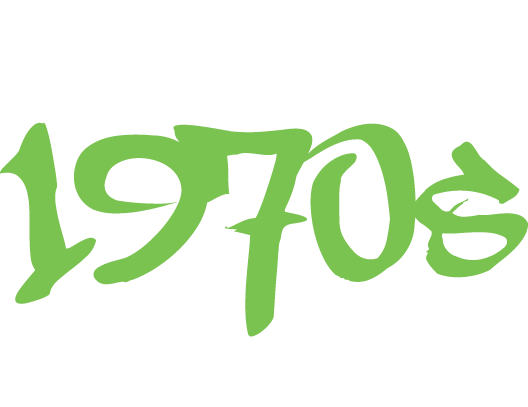

In the 1970s, an underground urban movement known as “hip hop” began to develop in the South Bronx in New York City. It focused on emceeing (or MCing) over “breakbeats,” house parties and neighbourhood block party events, held outdoors. Historically, hip hop arose out of the ruins of a post-industrial and ravaged South Bronx, as a form of expression of urban Black and Latino youth, whom the public and political discourse had written off as marginalized communities.
Jamaican-born DJ Clive “Kool Herc” Campbell pioneered the use of DJing percussion “breaks” in hip hop music. Herc created the blueprint for hip hop music and culture by building upon the Jamaican tradition of impromptu toasting, a spoken type of boastful poetry and speech over music. Herc’s experiments with making music with record players became what we now know as breaking or “scratching.”
The basic elements of hip hop—boasting raps, rival “posses” (groups), uptown “throw-downs”, and political and social commentary—were all long present in African American music. MCing and rapping performers moved back and forth between the predominance of “toasting” songs packed with a mix of boasting, ‘slackness’ and sexual innuendo and a more topical, political, socially conscious style. The role of the MC originally was as a Master of Ceremonies for a DJ dance event. The MC would introduce the DJ and try to pump up the audience. The MC spoke between the DJ’s songs, urging everyone to get up and dance. MCs would also tell jokes and use their energetic language and enthusiasm to rev up the crowd. Eventually, this introducing role developed into longer sessions of spoken, rhythmic wordplay, and rhyming, which became rapping.
By 1979 hip hop music had become a mainstream genre. It spread across the world in the 1990s with controversial “gangsta” rap. Herc also developed upon break-beat deejaying, where the breaks of funk songs—the part most suited to dance, usually percussion-based—were isolated and repeated for the purpose of all-night dance parties. This form of music playback, using hard funk and rock, formed the basis of hip hop music. DJs such as Grand Wizzard Theodore, Grandmaster Flash, and Jazzy Jay refined and developed the use of breakbeats, including cutting and scratching. Popular tunes included Kurtis Blow’s “The Breaks” and The Sugarhill Gang’s “Rapper’s Delight.”
DJ Kool Herc’s house parties gained popularity and later moved to outdoor venues in order to accommodate more people. Hosted in parks, these outdoor parties became a means of expression and an outlet for teenagers, where “instead of getting into trouble on the streets, teens now had a place to expend their pent-up energy.” For inner-city youth, participating in hip hop culture became a way of dealing with the hardships of life as minorities within America, and an outlet to deal with the risk of violence and the rise of gang culture. Inspired by DJ Kool Herc, Afrika Bambaataa created a street organization called Universal Zulu Nation, centered around hip hop, as a means to draw teenagers out of gang life, drugs and violence.